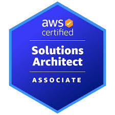
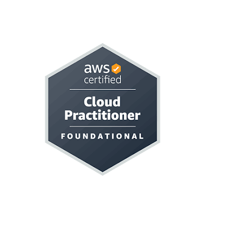
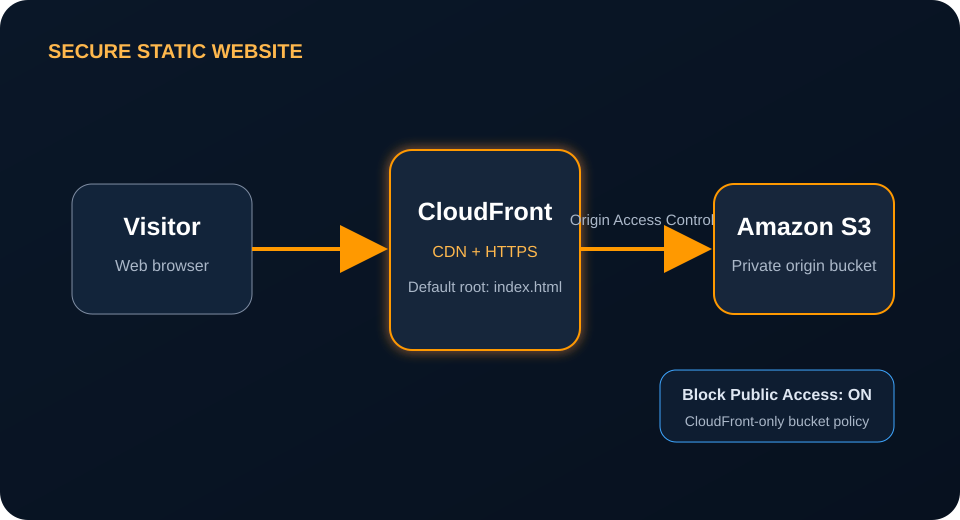
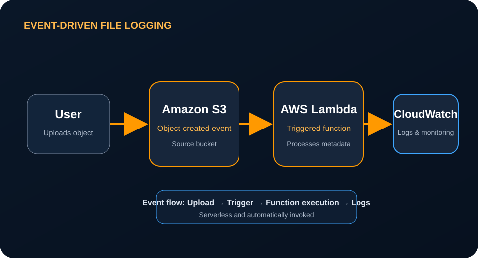
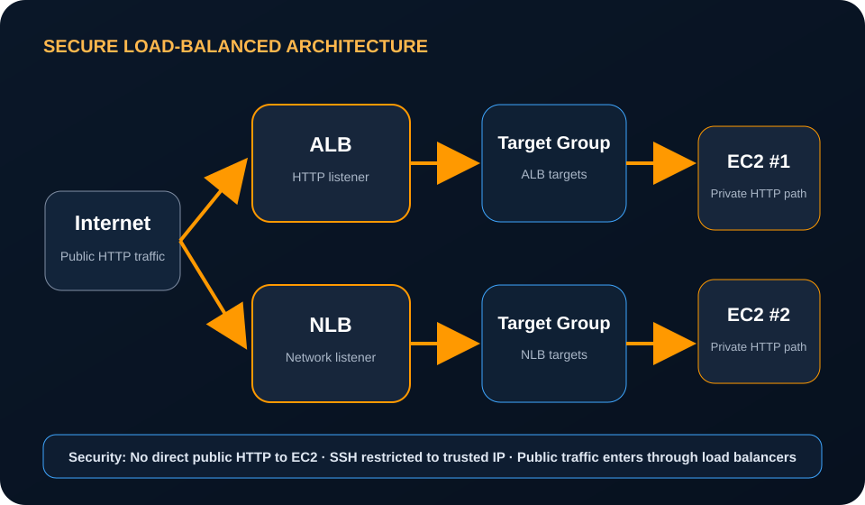

AWS CERTIFIED · SAUDI ARABIA
Ahmed Askar
AWS Certified Cloud & DevOps Engineer
I build secure, scalable, and highly available cloud solutions using AWS, infrastructure automation, and modern DevOps practices.
profile:
name: Ahmed Hassan Askar
role: Cloud & DevOps Engineer
certifications:
- AWS Cloud Practitioner
- AWS Solutions Architect Associate
focus:
- Secure Architecture
- High Availability
- Infrastructure as CodeABOUT ME
Cloud engineering with security at the center.
I am an AWS Certified Cloud & DevOps Engineer based in Saudi Arabia's Eastern Province. I have hands-on experience designing and deploying AWS environments using services such as Amazon EC2, VPC, S3, CloudFront, Lambda, CloudWatch, IAM, and Elastic Load Balancing.
My projects focus on secure access, controlled traffic flow, event-driven automation, high availability, and practical cloud architecture. I document my work on GitHub and continue expanding my portfolio through real AWS implementations.
CERTIFICATIONS
Validated AWS credentials.

Amazon Web Services
AWS Certified Cloud Practitioner
Issued: 04 March 2026
Valid through: 19 June 2029
Validation: 9a0be4c2075147e9a5e113df17e95cc4
Verify credential →
Amazon Web Services
AWS Certified Solutions Architect – Associate
Issued: 19 June 2026
Valid through: 19 June 2029
Validation: af5fa4a23cd5445db199a169deee29a6
Verify credential →PROJECTS
Hands-on AWS implementations.

SECURE STATIC DELIVERY
AWS S3 & CloudFront Static Website
Built and deployed a static website using Amazon S3 as the private origin and Amazon CloudFront as the CDN.
Kept S3 Block Public Access enabled, configured Origin Access Control, added a restricted bucket policy,
and set index.html as the CloudFront default root object.

EVENT-DRIVEN AUTOMATION
S3 Lambda File Upload Logger
Created an event-driven workflow where an object upload to Amazon S3 triggers an AWS Lambda function. Function activity and execution details are captured in Amazon CloudWatch for monitoring and troubleshooting.
View on GitHub
SECURE TRAFFIC FLOW
Application & Network Load Balancer Architecture
Built a secure AWS architecture using an ALB, NLB, two EC2 instances, target groups, and security groups. Public HTTP traffic is accepted by the load balancers, while the EC2 instances block direct public HTTP access. SSH is restricted to a trusted IP address.
View on GitHubTECHNICAL SKILLS
Technologies used across my cloud projects.
Cloud Platform
AWS, EC2, S3, VPC, IAM, CloudFront, Lambda, CloudWatch, Route 53, RDS
Networking & Security
Public and private subnets, route tables, security groups, Internet Gateway, ALB, NLB, target groups
Infrastructure & DevOps
Terraform, Docker, Linux, Git, GitHub, CI/CD, Jenkins
Architecture
High availability, least privilege, private origins, load balancing, event-driven workflows, monitoring
CONTACT
Let's build reliable cloud infrastructure.
Open to Cloud Engineer and DevOps Engineer opportunities in Saudi Arabia.
ahmed.hassan.askar@gmail.com
+966 54 488 6322
Eastern Province, Saudi Arabia